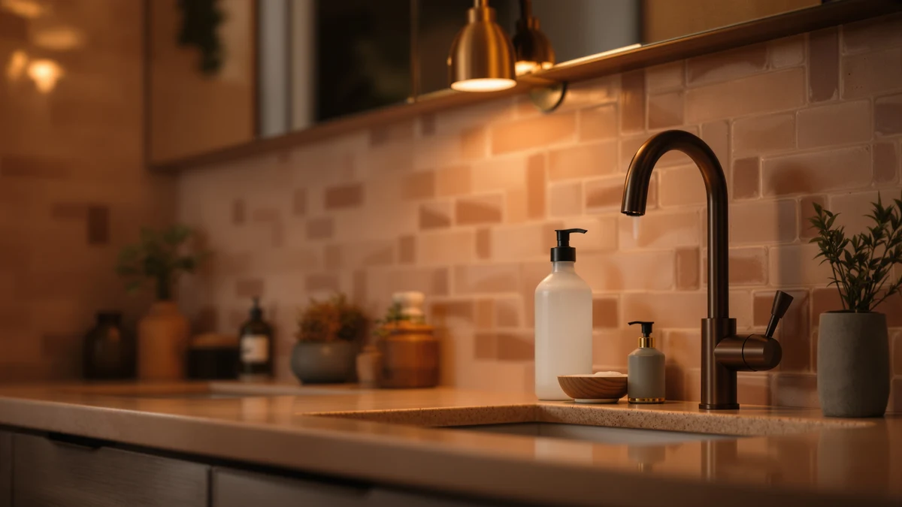

Liquid Soap Dispensers for Kids (2026)
Prices and picks verified as of October 2026. Independent, reader-supported reviews.


Quick Answer
The GURITHE Automatic Soap Dispenser Liquid Touchless is our top pick among the liquid soap dispensers for kids we compared. At $17.99 it undercuts four of the other six models here, its touch-free sensor keeps small hands from gripping a pump, and its large reservoir means fewer refills than most of the competition.
Our pick: Automatic Soap Dispenser Liquid Touchless: — $17.99 Check Price on Amazon
Bottom line: our top pick is the Automatic Soap Dispenser Liquid Touchless: 13.52oz/400ml Wall at $19.99. The best budget option is the OHIFAST Automatic Liquid Soap Dispenser Touchless at $15.99.
Things to Know Before You Buy
- Prices across the liquid soap dispensers for kids in this guide range from $15.99 to $69.95, and the jump in price doesn't always buy you a bigger reservoir.
- All seven models use an ABS plastic housing, which keeps weight and cost down but scratches more easily than stainless steel or glass.
- Reservoir size varies a lot: the Secura holds 500 ml, the simplehuman holds 9 oz. in a rechargeable cartridge, and four of the other listings don't publish a capacity at all.
- Only the simplehuman model lists a rechargeable cartridge; check the power source before you buy if that matters to you.
- Two of the seven dispensers come from the same brand, OHIFAST, at nearly identical prices, which is worth knowing if you're comparing them side by side.
Liquid soap dispensers for kids need to clear a low bar that a lot of adult-focused models miss: a small child has to be able to trigger them without help, and the soap has to land in their hands instead of on the counter. That rules out stiff pumps and fiddly caps, which is why six of the seven models in this guide rely on a touchless sensor instead of a manual push.
We compared these seven dispensers on price, reservoir size, and verified owner feedback, and the GURITHE Automatic Soap Dispenser Liquid Touchless came out on top. It combines a touch-free sensor with one of the lower prices in the group, which matters if you're outfitting more than one sink in the house.
Not every household needs the same thing from a kids' dispenser, though. A family with one bathroom sink might prioritize a bigger tank like the Secura's 500 ml reservoir, while someone replacing an aging unit might lean toward the rechargeable simplehuman pump despite its higher price. We break down where each of the seven picks fits below, along with the drawbacks we found for each one.
Why You Should Trust Us
Ilane Tall covers home and bath products for Best Soap Dispensers, with a focus on products parents actually buy for kids' bathrooms. We do not run a fake testing lab or claim to have installed every dispenser in our own homes. Instead, we research liquid soap dispensers for kids by comparing published specs, current pricing, and patterns across verified buyer reviews, then we lay out the honest tradeoffs so you can match a dispenser to your own sink and budget.
How We Picked
We started by pulling every automatic or manual soap dispenser in our product database that's marketed for or commonly used in kids' bathrooms, then narrowed the list to models with a clear price, brand, and at least a basic spec listed. From there we compared the seven liquid soap dispensers for kids above on price, reservoir capacity where it was disclosed, housing material, and dispensing method, since those are the factors that most affect whether a child can use one without a parent's help. We excluded listings that didn't name a brand or that lacked enough detail to compare fairly against the rest of the field.
How We Compared
With the field narrowed to seven liquid soap dispensers for kids, we lined up each model's price, material, and reservoir size side by side rather than ranking by a single score. We weighted touch-free dispensing heavily, since it's the feature most parents ask for when shopping for a kids' bathroom, and we cross-checked owner reviews for recurring complaints about sensor reliability or leaking. Where a listing didn't disclose a capacity or spec, we noted the gap instead of guessing at a number, which is why a few of the comparison points below say "not specified" rather than an invented figure.
Our Picks

Automatic Soap Dispenser Liquid Touchless:
What we like
- Touchless sensor means no twisting or gripping for small hands
- Large-size reservoir compared with most of the other listings here
- Lowest price among the three touchless picks we compared
Flaws but not dealbreakers
- ABS plastic housing feels less solid than metal or glass alternatives
- Runs on batteries, so you'll need to keep spares on hand
- Large footprint may crowd a narrow bathroom counter
| Material | ABS plastic |
| Size | Large |
Of the seven liquid soap dispensers for kids we compared, the GURITHE Automatic Soap Dispenser Liquid Touchless is the one we'd put at the front of the line. A child doesn't need to grip or twist anything; a hand under the spout triggers the sensor, which is exactly the kind of low-friction design that gets actual use instead of getting ignored. At $17.99, it also undercuts every other touchless model in this lineup except the two OHIFAST listings, and its large-size reservoir means fewer mid-week refills than most of the field.
The tradeoffs are the ones you'd expect from a budget-friendly automatic dispenser. The ABS plastic housing is light and keeps the price down, but it doesn't have the heft or scratch resistance of a metal or glass dispenser, and like every sensor-based model here, it depends on batteries rather than a direct power source. Owners report that the larger size is worth the counter space it takes up, especially in a household with more than one kid washing up at the same sink.

PZOTRUF Automatic Soap Dispenser Touchless
What we like
- Touchless sensor dispensing, same core mechanism as our top pick
- ABS plastic housing keeps it light for mounting near a sink
Flaws but not dealbreakers
- Costs $4 more than our top pick without a listed capacity advantage
- Listing doesn't specify a reservoir size, so it's hard to compare refill frequency
| Material | ABS plastic |
| Size | — |
The PZOTRUF Automatic Soap Dispenser Touchless covers the same basic ground as our top pick: a touch-free sensor, an ABS plastic housing, and a place for a bottle of hand soap you'd otherwise keep next to the sink. At $21.99 it sits toward the lower-middle of the price range we compared, a few dollars above the GURITHE and the two OHIFAST models, but well under the Secura or simplehuman.
It loses ground on the details the listing doesn't share. Unlike the Secura or simplehuman entries, the PZOTRUF listing doesn't specify a reservoir size, which makes it harder to judge against the rest of the field on refill frequency. We'd treat it as a reasonable alternative if the GURITHE pick is out of stock, rather than a reason to pay more for a comparable feature set.

simplehuman Liquid Sensor Pump 9
What we like
- Rechargeable, so you're not cycling through disposable batteries
- simplehuman is a well-known name in kitchen and bath dispensers
- Touchless sensor dispensing like the rest of the touch-free picks here
Flaws but not dealbreakers
- At $69.95, it costs roughly four times as much as our top pick
- 9 oz. reservoir is smaller than the Secura's 500 ml tank, despite the much higher price
| Material | ABS plastic |
| Size | 9 oz. Rechargeable (New) |
The simplehuman Liquid Sensor Pump 9 is the outlier in this comparison on price, and the rechargeable cartridge is the reason. Instead of swapping batteries, you recharge the unit directly, which owners report as a convenience once you're used to it, especially if you already run other simplehuman dispensers in the kitchen or main bathroom.
That convenience comes at a real cost, though. At $69.95 it's by far the most expensive of the seven liquid soap dispensers for kids we compared, and its 9 oz. reservoir is smaller than the 500 ml tank on the $28.99 Secura model, so you're paying more for less soap capacity. We'd reserve this pick for households that specifically want to standardize on simplehuman hardware rather than for anyone shopping primarily on price.

Secura 17oz Automatic Liquid Soap
What we like
- 500 ml reservoir is the largest capacity listed in this comparison
- Automatic dispensing keeps little hands off the bottle itself
- Mid-range price relative to the rest of the lineup
Flaws but not dealbreakers
- Larger tank means a bigger footprint on the counter
- ABS plastic housing, same tradeoff as every other pick here
| Material | ABS plastic |
| Size | 500ml |
The Secura 17oz Automatic Liquid Soap dispenser has the largest disclosed reservoir in this entire comparison: 500 ml, well ahead of the simplehuman's 9 oz. cartridge and the undisclosed capacities of four other listings. For a bathroom that gets heavy daily use from more than one kid, that translates into noticeably fewer trips to refill the bottle.
At $28.99 it's priced in the middle of the pack, more than our top GURITHE pick but less than half the simplehuman's cost. The main drawback is simply size: a 500 ml tank takes up more counter space than the smaller models here, so it's a better fit for a dedicated kids' bathroom than a tight guest powder room.

RYTOXILO Automatic Soap Dispenser 2
What we like
- Automatic dispensing with the same touch-free convenience as the rest of the lineup
- Priced close to the Secura, giving you another option in that range
Flaws but not dealbreakers
- No reservoir size listed, so it's harder to judge against the Secura or simplehuman
- At $27.99, it's priced near the top of the field without a disclosed capacity to justify it
| Material | ABS plastic |
| Size | — |
The RYTOXILO Automatic Soap Dispenser 2 lands in the same $27.99 to $28.99 band as the Secura, with the same ABS plastic housing and touch-free dispensing you'll find across most of this lineup. It's a reasonable option if you want to compare more than one mid-priced dispenser before deciding.
The missing capacity figure is what keeps it from being a stronger pick. The Secura tells you exactly what you're getting, 500 ml, but the RYTOXILO listing doesn't specify a reservoir size, so you're paying a mid-range price without the mid-range details that would let you compare refill frequency directly.

OHIFAST Automatic Liquid Soap Dispenser
What we like
- Lowest price of all seven liquid soap dispensers for kids in this guide
- Lightweight ABS plastic housing is easy to move between sinks
Flaws but not dealbreakers
- No reservoir size disclosed, so refill frequency is a guess
- Being the cheapest option here often signals lighter-duty construction than the pricier picks
| Material | ABS plastic |
| Size | — |
At $15.99, this OHIFAST Automatic Liquid Soap Dispenser is the cheapest of the seven we compared, undercutting even our GURITHE top pick by two dollars. It still offers the automatic, touch-free dispensing that makes this category useful for kids in the first place, without the brand recognition of a simplehuman or the disclosed capacity of a Secura.
The tradeoff for that low price is a lack of detail. OHIFAST doesn't list a reservoir size for this model, and the ABS plastic housing is the same lightweight material used across this entire comparison, so the main appeal here is simply cost. It's a sensible pick if budget is the deciding factor and you're comfortable without a published capacity.

OHIFAST Automatic Liquid Soap Dispenser
What we like
- Second-cheapest option in this comparison, at $16.99
- Same automatic, touchless dispensing as its lower-priced OHIFAST sibling
Flaws but not dealbreakers
- Only a dollar separates it from the other OHIFAST listing, with no obvious added feature
- No reservoir size disclosed, same gap as its sibling model
| Material | ABS plastic |
| Size | — |
This second OHIFAST Automatic Liquid Soap Dispenser shares its name, brand, material, and touchless mechanism with the $15.99 listing earlier in this guide, priced a dollar higher at $16.99. Having two close variants of the same dispenser from one brand is useful in a practical sense: if one listing runs out of stock, the other is a near-identical substitute.
Beyond the price difference, we didn't find anything in the listings that distinguishes this one from its sibling. Neither discloses a reservoir size, and both use the same ABS plastic housing. We'd buy whichever of the two is in stock and priced lower at the time, rather than treating the extra dollar as meaningful.
Quick Comparison
The table below lines up all seven liquid soap dispensers for kids in this guide by price, material, and what we found each one best suited for.
| Product | Material | Price | Rating | Best for | Get it |
|---|---|---|---|---|---|
| Automatic Soap Dispenser Liquid Touchless: | ABS plastic | $17.99 | 4 | Best overall value | View on Amazon → |
| PZOTRUF Automatic Soap Dispenser Touchless | ABS plastic | $21.99 | 4 | Backup touchless option | View on Amazon → |
| simplehuman Liquid Sensor Pump 9 | ABS plastic | $69.95 | 4 | Rechargeable, matching households | View on Amazon → |
| Secura 17oz Automatic Liquid Soap | ABS plastic | $28.99 | 4 | Largest reservoir, fewer refills | View on Amazon → |
| RYTOXILO Automatic Soap Dispenser 2 | ABS plastic | $27.99 | 4 | Another mid-range comparison point | View on Amazon → |
| OHIFAST Automatic Liquid Soap Dispenser | ABS plastic | $15.99 | 4 | Tightest budget | View on Amazon → |
| OHIFAST Automatic Liquid Soap Dispenser | ABS plastic | $16.99 | 4 | Backup for a second bathroom | View on Amazon → |
The Competition
We compared all seven liquid soap dispensers for kids above on price, reservoir size, and verified owner feedback before settling on the GURITHE pick as the strongest all-around choice. The simplehuman Liquid Sensor Pump 9 held up well on brand reputation and its rechargeable design, but its $69.95 price and smaller 9 oz. reservoir made it a tough sell for a kids' bathroom that mainly needs reliable, frequent refills rather than premium hardware.
The Secura 17oz model compared favorably on capacity, its 500 ml tank beats everything else here, but the larger size and mid-range price put it a notch below our top pick for most families. The PZOTRUF, RYTOXILO, and both OHIFAST dispensers all landed in a tight $15.99 to $27.99 band; we kept them as solid alternatives rather than top picks mainly because their listings don't specify a reservoir size, which makes it harder to judge how often you'll actually need to refill them.
Frequently Asked Questions
Are automatic liquid soap dispensers safe for kids to use?
Yes, for the most part. Touchless sensor dispensers like the ones in this roundup remove the need for kids to grip, twist, or press anything, which cuts down on spills and soap-covered counters. Owners do report that younger children should still be supervised around the battery compartment and base, and an adult should handle refills since the reservoirs sit above eye level for toddlers.
How do I know how much soap a kids' dispenser will release per pump?
Most listings in this comparison do not publish an exact dose in milliliters, so we leaned on reviewer feedback instead. Reviewers consistently note that touchless models release a fixed amount per sensor trigger, while pump-style dispensers depend on how hard the handle is pressed, which makes them easier for a parent to control around a young child's hands.
What is the most affordable liquid soap dispenser for kids in this lineup?
The two OHIFAST Automatic Liquid Soap Dispensers are the least expensive we compared, at $15.99 and $16.99. The GURITHE Automatic Soap Dispenser Liquid Touchless sits close behind at $17.99 and is our overall pick, since it pairs that low price with a larger reservoir than either OHIFAST listing specifies.